| globish AI時代の英語術 【徹底基礎編】: 仕事に即効 人生さえ変える | |
| 長谷川 正和 | |
| (2018) | |
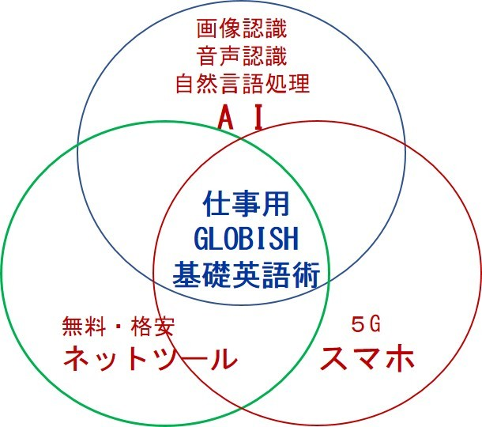
この本は基礎ビジネス英語を中心軸に
強烈なインパクトの ５G が導入されるスマホと
世界各国との時間と距離をなくすICT/AIを使って
あなたの市場価値を 200 ％ 増しにするための本です。
それは、AI英会話 ナンナ。無料オンライン英語辞書などの英語関連総合サービスWeblioが始めたAI英会話。
た、タダなの？
最初に見たのは2015年8月、どんどん改良されているようで、2018年6月にテストしたところ、さすがAI、階段を一歩一歩登って行くように進歩していました。まだ改良の余地はあると思いますが、将来が楽しみです。
入門からビジネスまで、レベル別に７コース設定されており取り組みやすいと思います。 しかし、無料英会話はナンナだけではないのです。
さらに、本書でお奨めするスマホ英語学習のためのアプリ、たとえば Terra Talk は iPhoneとAndroid ともに準備OK。 ナンナは iPhone だけですが、Android対応も年内に実現すると予想しています。
しかしあまり大きな話題にはなっていません。
なぜだと思いますか？
わたしはこう考えます。
１．既存英語事業のビジネスモデルが壊れてしまう。
タレントを使った大量CM、施設設備費や人件費などが価格に跳ね返る英会話学校、英語塾、高額な通信販売の既存事業者は、深層学習 (Deep Learning) で実用レベルに達して、さらに日々進化する無料から格安のAI教材 を導入できない。
しかし、
２．英語教育にAIは徐々に入り込んでいる。
簡単にご自分で確認する方法があります。
Googleで 「英語」 「AI」 の2ワードで検索してみてください。
検索結果の すべて か ニュース を見ると最新のトレンドがわかります。
さらに、2-3週間ごとに再検索するとその進化を体感できると思います。*
* 2018年5月3日の英語 AI検索結果（すべて）は1,830万ヒット、5月20日には2,040万ヒット、僅か2週間余りで210万ヒット増加し伸長率は11.5％ でした！（恐ろしや）
そこで、
社団法人日本グロービッシュ協会は3年半で3,000名を超える英語が苦手なビジネスパーソンに提供した、「集合研修＋インターネット経由フォローアップ研修」の良いところだけを残し、2018年初夏から新装開店。ネットを通じて「英語が苦手だけれど英語が必要なサラリーマン」
の皆さんにAIの英語領域に対する成果を採り入れた「これで仕事には十分」な英語力獲得の方法を提供させていただくことを決断しました。
AI＋インターネット＋スマホ＝
仕事には十分なGLOBISH 基礎英語
概要は次の通りです。
A) AIの得意分野を徹底的に活用
画像認識から変革が始まったAI（Deep Learning）はさらに音声認識と自然言語の処理を加えた三大分野に威力を発揮します。
英語にフォーカスすると、発音・会話・リスニング・翻訳・ビジネスメールです。
ネット上には、それぞれに対応した無料から格安のサービスやツールが続々とアップされています。使わない手はないですよね！？
B) 無料・ 格安のアプリとネットツールを徹底的に活用
単語の記憶には記憶の脳科学を応用した無料アプリを利用。
数十年の実績がある無料素材をリスニングに使い、さらに倍速リスニングを無料ツールで実現します。倍速リスニングでは、話す速度を通常の倍とし脳にリスニング圧力をかけ、一気にノーマルスピードに戻します。すると「遅く聞こえて聞き取れる」 というトレーニングが意識せずに出来ます。会話は無料AI英会話。。
改めて文字にすると無料だらけですね・・・成果測定には格安だけれども品質のしっかりした英会話力測定ツールを使います。
このツールは、アメリカで開発され日本人向けに改良されています。
C) ５G時代のスマホ活用
今までは４GLTE/４G時代。
２０２０からは日本だけではなく世界中５Gに移行を始めます。
すると、動画などのデータを受けるときの速度が今普段使っている４GLTEの100倍以上、執筆時点2018年６月の4Gの最速規格 LTE-Advanced でも10倍以上となります。。。。。５Gの世界が想像できますか？
スマホやタブレットはますます生活の中に深く入り込むでしょう。
しかし、いいことばかりでもありません。
現在のAIには未熟な面があります。たとえば翻訳。
日本人が得意な行間をよむ、という機能はGoogleなど欧米で進化しているAIには困難を伴います、と言っても2-3年前と比べると格段に進化しているのですが・・・
また会話も相手の表情や身振り手振り、声のトーンを察知した「心の動き」には対応できません。（ただし、当面は、という前置きが付きます）
そこで、当面はAI利用に際しては「仕事で使えるようなさじ加減」をおこなう必要があります。
幸いグロービッシュはJean-Paul Nerrièreがフランスで設立して以来30年、その変わらぬコンセプトがAIの英語利用にうまく適合しています。
それらは、
・ 単語は1500語習得から始める
・ ストレートに言いたいことが伝わる能動態を基本にする
・ 簡潔に表現する。文字数にすると15字以内
・ 発音も大事だけどアクセントを重視
・ 言葉に加えて表情、しぐさ、図表やサンプルを使用
逆に
・ 自国の文化習慣から発した表現、ジョークは使わない
『英語が苦手な』ビジネスパーソン（会社員）。
英語力の目安は英検準2級前後、TOEIC ( L&R)スコア300-600くらい、CEFR* A2（後半）からB1（前半） です。
* CEFRは欧州評議会が制定した外国語学習者の習得状況の指標で、日本ではNHKの英語講座で使われ、文科省の新学習指導要領にも影響を与えています。A2は初級者で自分の身の回りのことのコミュニケーションが取れる、B1は中級者で仕事や日常生活について複雑な内容でなければコミュニケーションが取れる、というイメージです。
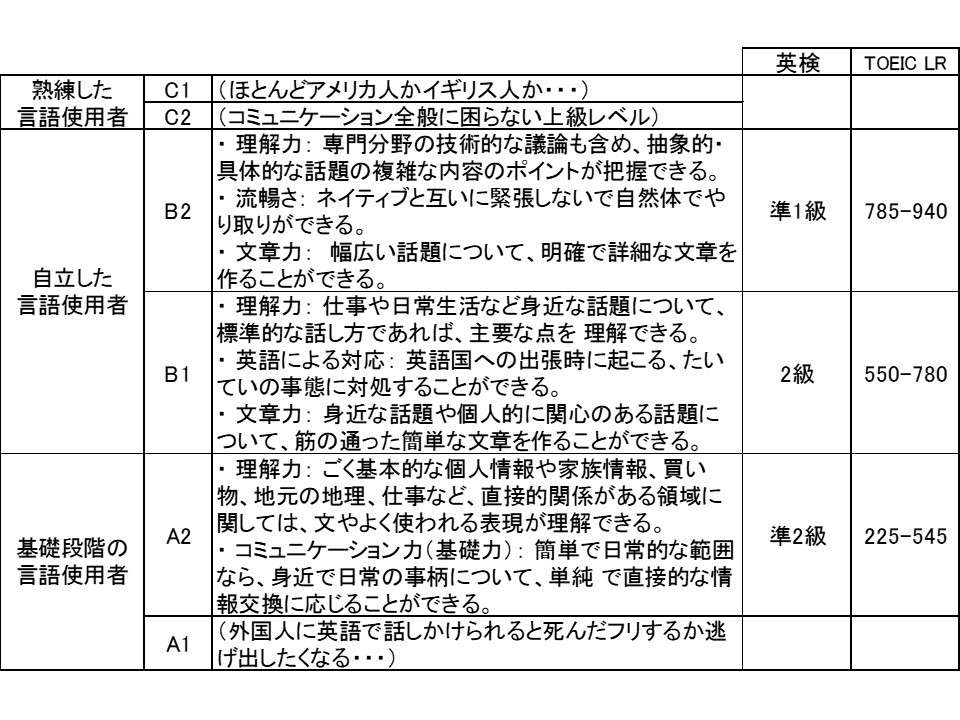
文科省のデータを参考に著者が構成。（カッコ）内は著者の意見です。
TOEICの点数はずいぶん高い印象がありますが、基礎力をつけたうえで入念な試験対策を取ればこのくらいは取れるでしょう、という程度に考えるといいと思います。
CEFRに前半・後半の区分はありませんが、本書の目的に合わせるため前・後半としました。
目標は「B2の自立した＝実務に対応できる準上級者」です。
世界の英語話者人口は21億人。
ネイティブといわれるアメリカ、イギリス、オーストラリア、ニュージーランドなどの英語母語人口4億人。
（文科省による2005の年データ。いま英語話者はもっと増えていそうですね）
日本人がまず目指すべき国際コミュニケーション英語はアジアをはじめとした17億人が使っている、グロービッシュ的英語 です。
社内英語化で一時大騒ぎになった楽天では、社長の三木谷さんが自著「たかが英語！」でこう述べておられます。
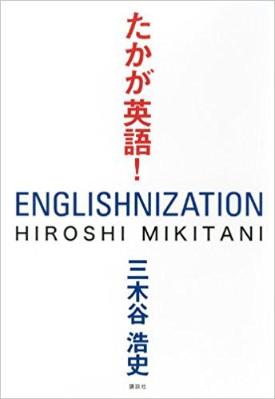
■グロービッシュが公用語
楽天が社内公用語とするのは、厳密にいえば、いわゆる「英語」ではない。グロービッシュである。
本書はこの電子書籍とインターネットのハイブリッドです。
本・・・英語各技能をAI活用で 「ひとりでこっそり学ぶ方法」 の全体像
メール・・・本の内容を強化する仕事英語の現場で役立つヒミツと最新アプリ紹介
ホームページ・・・音声や動画、資料などを掲載
本書には所々本書専用ホームページとのリンクが張られています。
メールは加圧リスニングを含め、全１２講義で毎週２回、1カ月半で終了です。
そして終了後も１０日に1回程度フォローアップの 「仕事に役立つ英語ネタ」 をお送りします。
おなかいっぱいになったら、いつでもワンクリックでメールを解除できますから、
どうぞご安心ください。
メール登録の方法は巻末をご覧ください。
もしこの本＋HPで 「わかった、これで大丈夫」 であればオッケー！
メール登録よりも、どんどんご自分で先に先にと進めて世界２１億人の英語話者市場で ひとあばれ（ひと稼ぎ） しましょう！！
もし少しでも不安があるならメール講義（無料）を受けてください。
なぜなら私もそうですが、多くの人は モチベーション を維持できない、とくに仕事に追われるサラリーマンには 中途挫折 は致し方ない現実です。
わたしは社会に出てすぐ、英語の必要性を感じて５年払いローンで英会話講座のカセットテープを買いました。就職先が外国航路専門の船会社だったから。
でも１か月でギブアップ、続きませんでした。
続かなかった理由は忙しかったことと危機感のなさ。
そののち、船会社は海運不況で当時戦後最大の負債を抱えて倒産。
次に行った小さいけれど伸び盛りの船会社も、専門分野で世界３位の規模になったとたんに超円高不況で倒産どころか会社清算。結局「英語を学ぶ」というモチベーションを維持できませんでした。
そこで飛び込んだのがつぶれそうにない世界最大級の飲料食品会社PepsiCoの日本支社。アメリカの会社といえど外国人は３人で上司の部長は生粋の日本人。
上司の上司がアメリカ人CFO Chris Hendrickson クリス・ヘンドリクソンさん。
えっ、知らなかった。聞いてない。
といってもあとの祭り（幼い子供２人を抱え、失職してあせっていましたし）
まあ、直接影響はないだろうと。
ところがまた知らなかった！
外資には時折ドットラインという組織構成があって、自分の上司以外にほかの上司にレポート（報告）する場合があると。
私は生産企画と国際物流関連が専門として入社したので、担当分野の重要事項と1か月ごとの定期レポートはクリスと場合によってはイギリス人の社長。
おいおい、どうすんのよ。 どうすんのよ 長谷川？
危機一髪で一瞬腰が抜けそうになったけど、家族のことが頭に浮かびモチベーションが↑↑↑↑↑。 通勤や深夜帰宅前後の空き時間、土日に自己特訓。
ところがどっこい。
６年後にはアメリカ本社が秘密裏に日本事業をサントリーに売却。
日本人社員は仕事しなくていいから次に仕事を探せ！ となりました。
長谷川は？
ご心配おかけして申し訳ありません。
会社がなくなる前に外部から声がかかって、無事年収２割アップでApple（旧アップルコンピュータ）に転職できました。
仕事英語ができると、長い人生、いいことが起きますよ！
ただし本書を読んで最新のAIとネット技術の恩恵を受けながらも、数カ月から長ければ１年間、仕事や生活の空き時間を利用して腕を磨く必要があります。
人生１００年時代を生きる あなた！
長い人生のわずか数カ月から１２カ月の間の努力がその後の人生を がらっ と変えるほどの成果を生むことだってあります。これは私の実体験です。少なくとも転職や昇進昇級、起業には有利です。
ではこの本の構成をご案内します。
第一章 AI時代の英語習得法
AIの技術進歩で通訳翻訳はすでに実用レベル。
いまさら英語を学習する意味はあるのか？ という疑問にお答えします。
第二章 英語ベタは あなたのせいではありません！
なぜ 「あなたは英語が苦手なのか」 を言語発達の歴史から解き明かします。
ペラペラネイティブ英語の速攻対処法も。
第三章 AI *ICT英語術【実践編】
GLOBISH（グロービッシュ）の簡単な紹介と、英語の学習法を習得順に、
発音 → 単語 → 聴き取り → 会話 と解説します。
発音を最初に持ってきたのは、発音というオトつくりで英語らしくなるか英語が苦手なままで終わるかの第一関門だからです。
コミュニケーションとしての英語音作り（発音）は息の使い方・喉/舌/口の形や使い方で決まり、日本語とは発音方法が大幅に違います。
文章ではわかりにくいので、インターネットで動画と解説を見ながら真似してみましょう。
そして、発音が理解できると耳が日本語と違う音をコトバとして認識できるようになり（英語耳）、リスニングが上達します。
ペラペラした英語のリスニングには コツ があります。それは学校では教わらない「実際に話すときネイティブ、特にアメリカ人は発音が変わる」ということです。でも大丈夫。この変化にはルールがあります。このルールもトレーニングで真似できるのでご安心を。スピーキングがカッコよくなるかも！です。
最後にリスニングを軸として、単語・文法まで独習できるアメリカ製の無料サイト、VOA Learning English を紹介します。 さらにVOA LE ではスピーキングの口慣らし、音読 に挑戦しましょう。
口が回るようになればしめたもの！
実戦です！！
実戦の第一弾は無料アプリかWebのAIロボット会話で腕試し。
この実戦法はメールで詳しくご案内します。
どえらい時代になってきました。
野村総研が2015年12月にオクスフォード大学との共同研究で「日本国内の601種類の職業のうち、今後10〜20年のうちにAIによって現在の日本人の仕事の約49％
がなくなる。」と発表して、テレビや新聞雑誌は大きくこの問題を取り上げました。
さらになくなる可能性の高い仕事100、可能性の低い仕事100も同時に発表。
ざっくりまとめると、なくなるのは一般事務・貿易事務、公務員・銀行員などの事務職、組み立て・加工・機器オペレーターなどの現場作業職などです。それらをひと言にすると 『定型業務』。
なくならないのは医療介護関連、コンサルやカウンセラー、教育芸術エンタメなどの非定型業務。まとめると『クリエーティブ型業務』
あとの400はどうなるの？と突っ込みたくなるのはわたしだけでしょうか？？
おそらくどっちつかず。 時代の流れと技術開発の結果次第で生き残るか、なくなるか、それとも適応進化して形が変わるということでしょう。
NRIのレポートは消える職種でしたが、2017年9月に発表された『2018年以降にIT部門およびユーザーに影響を与える重要な展望
「Gartner Predicts 2018」』 では、2020年にはAIのために消える仕事は180万件、逆にAIによって生み出される仕事が230万件と仕事を失う人より就労機会が50万件増えると予想しています。
（図はGartner Predicts 2018 から原版引用し著者が注釈を作成）
何れにしても今のビジネスパーソンは、『AIをはじめとした仕事や日常生活の変化変革に引き起こすICT (Information and Communication Technology 情報通信技術) を使いこなすことが必須』 となる、が私の結論です。
2018年時点のAI（人工知能）は、囲碁（アルファ碁）、ロボットアドバイザーのようなフィンテック、身近には自動ブレーキ自動運転のように「特定用途」であれば人間の能力を超えるところまで技術開発が進んでいます。
この先10年以内に経理、一般事務、マニュアルのある工程のような定型業務はAIが取って代わる可能性は非常に高い。英語も例外ではありません。
翻訳はネット空間の膨大なデータの集積で日々精度が上がっています。さらにGoogle翻訳が
自己学習型AI を採用した2016年11月前後で翻訳精度が大きく向上した、と話題になりました。
実際に検証してみると、
Before
・ 少しでも含みのある文章は正しい翻訳にならない（行間を読まない）
・ 文章が長くなると翻訳が乱れる
・ 主語を省きがちな日本語の翻訳が苦手（たとえば、「行動を起こす」は誰が？となる）
英語-日本語間の翻訳精度は「使い物にならない」と評されるほど低かったのです。
After （2018年6月1日現在）
・ 行間を読むようになった
・ （改善の余地はあるが）文の切れ目を認識して意味の通じる日本語が期待できる
・
（完全ではないが、行間を読んで）主語を補う
つまり日々進化しており、2-3年内に実用書・ビジネス書は「ロボット翻訳＋人間の最終確認」が主流になると予測しています。 詩、散文（エッセイ）、抒情小説は、AIが人間の感情を理解できるようになるまで待たなければならないでしょう。
通訳？
気付かないうちにどんどん進んでいますよ。
ヒントは「音声認識」
私が最初に音声認識技術に触れたのは2002年。アドバンストメディア社で社長兼開発者の鈴木さんに「アミボイス」という音声認識ソフトのデモを見せていただいた時。
ショックでした！
キーボードをたたくことなく、ソフトが声で動くなんて、当時誰が想像したでしょう？
それから16年。
iPhoneのSiriに始まり、OK google
さらにはIoTスピーカーまで登場。
* この原稿を書いている最中に旅行に特化した英語・中国語・韓国語の自動翻訳機 イリ--- ili をテレビで元SMAPの草なぎ剛さんが宣伝していました。「ついに来たか・・・」という感想です。使える機能は限定的ですが、すでに実用化しているネット経由のスマホ用翻訳アプリと違って、手のひらに入るサイズに翻訳データを格納している目新しさがあります。
「リスニング」と「スピーキング・ライティング」はAIが加わって今後数年年以内にスマホのようなロボットが代行してくれると考えています。
ところがまたこの原稿を書いている最中に、Googleの「スマホにつける翻訳イヤホン」販売開始の話題が・・・ まだ満足いく実用域には達していなかったようですがGoogleはそれでも批判を恐れずに英語を含む多言語の通訳システムを世に問いました。
こんなドラえもんの 翻訳コンニャク がこの世に出てくるなんて、あなたは1年前に想像できました？ わたしはまだ2-3年かかると考えていましたが、完全に裏をかかれました。甘かったです。
では日本ではどうでしょう？
総務省は所管の情報通信研究機構（NICT）が開発した「同時通訳」の基幹技術を民間開放したと、日経3月2日朝刊で報道されています。同時通訳ができれば逐次の翻訳は難なくこなすでしょう。
2020東京オリンピックを睨んだ施策ですね。1964年の前東京オリンピックでは、新幹線が東京〜新大阪間で開業、首都高速が出来、オークラ・ニューオータニ・パレスホテルが次々開業と、東京のインフラ整備が一気に進みました。
（私事ですが、関西の実家には日立トリニトロンのカラーテレビが入りました）
日経はこう続けています " すでに実用化したアプリ「ボイストラ」では31言語の文字の翻訳に対応し、英語や中国語など17言語では音声の出入力の両方ができる。同時通訳は、話しているスピーチの文の切れ目などを自動で判断し、１つの文を話し終えてから数単語後には通訳を始める技術を開発済みだ
"
ここで疑問が出てきませんか？
「そもそもスマホにアプリさえ入れればいい時代が見えているから、英語なんて苦労して学ばなくても大丈夫じゃない？」
これって新しい文科省学習指導要領「小学校からの英語必須化」「中学と高校は英語で授業」の真逆をいく 問題発言ですね。
はい、正解◎です。
でも今までのような苦痛を伴う勉強はNGという意味です。
今までのように
・ 苦労して大学受験用の単語5000〜7000語（以上）を覚え、
・ 下手な発音を気にし、
・ 嫌いな文法を学んで
・ 英会話学校に行っても、
・ 来社した外国人対応などどんでもなく、
・ 聞くだけでぺらぺら教材を買っても話せない自分に悩み、
・ TOEIC L&R のスコアに一喜一憂する・・・ことはやめてください。
これらは今後必要ありません。
しかしAI時代を前に、自分の言いたいことをたとえ日本語訛りのあるペラペラでない英語であろうと、自分の言葉で相手に直接伝える重要性が増しています。
仕事経験のあるあなたであれば、相手に直接会って話をしたほうが「仕事・商談」が進みやすい、という経験をお持ちだと思います。 メールより親しみやすい「チャット」、チャットより声のトーンと話し方で言いたいことが相手の耳に直接届く「電話」、電話より視覚に訴え相手に伝わる情報量が倍加する「面談」。
そもそもコミュニケーションには いいね・嫌な感じ などの感情が入り、対面会話では言葉に加えてしぐさや表情から多くの言語外コミュニケーションを交換しあっています。
すでにビジネス経験のあるあなたは、日本であっても相手と食事をしながらの相談や商談は「結果」を出すための強力な手段であることをご存知でしょう。
それでもあなたが「会いに行く時間がない」とお悩みなら、インターネットビデオ会議をお使いください。時差に配慮は必要ですが、きっと多くのことが伝わります。
そして国境をまたいだ仕事の場合、 GLOBISH時代の基礎英語
が重視するのは、英語文化圏のビジネス習慣に即したコミュニケーション、いわば異文化コミュニケーション術です。
欧米英語文化と英語を話すアジア・中東・ヨーロッパ・アフリカ・中南米の仕事仲間、取引先の文化習慣に配慮したビジネスをGLOBISHは強く意識しています。
普段はメールやビジネスチャットでも、重要案件や緊急課題の場合は直接会って、海外の場合はビデオミーティングで話すこと、躊躇せず行動に移すことがデジタル化の進む今後ますます必要になります。
必要最低限のビジネス英語を学んで即、国境をまたいだ仕事に英語を使ってください。遠慮なく英語で稼いでください。
その際、無料＋低価格のインターネット・スマホアプリ・AIを徹底的に活用しましょう。3年ほど前にはフリーミアムというマーケティング手法が流行しました。無料（Free）と上位版は有料（Premium）を掛け合わせた造語です。わたしは経験から無料ツール60-70％
、格安の教材30-40％
くらいで英語習得を進めることをおススメします。
AIが従来の英語教育を不要にし、定型業務をおこなっているホワイトカラーの仕事を奪う！ 弁護士、会計士、税理士、司法書士などの士業の定型部分は危険。
定型業務を行うエンジニアも危険。
これは正しい近未来の姿でしょう。
ルールに従っておこなう業務はAIにすべてといっていいほど置き換えが可能と考えられます。
家族を守り、職場や社会におけるご自分の快適な居場所を作るには「自分の市場価値をあげる」ことです。
仕事において専門性を持つことで自分の市場価値は上がります。
ビジネス英語はあなたの専門技術・ビジネスノウハウを世界21億人市場 （ *出典 文科省） に向け開放する触媒になります。
ハーバードビジネスレビューや週刊ダイヤモンドを発行するダイヤモンド社のサイトには、「英語力のあるなしで年収は30％
も違う!?
押し寄せるグローバル転職の波に勝つ人、負ける人」 という記事がありました。
経営からIT、エンタメまでをカバーするマイナビニュースのサイトには、「英語力のある人の給料は、平均の2倍以上!? - 50代後半では約800万の差が」 という記事が。
わたしの場合は、倒産した船会社から PepsiCo に転職したとたん、年収が1.7倍。
PepsiCoが日本から撤退してAppleに移ったときは1.2倍。
だから 「年収30％ アップは普通、200％ もあり得る」 がわたしの素直な実感です。
日本人が英語での日常生活に不自由がないようになるには3,000時間必要といわれています。
裏付けとなる具体的根拠はアメリカの外交を担う国務省の外国語学校のデータです。
（School of Language Studies, Foreign Service Institute）
全く知らないレベルから、辞書に頼らなくてよい十分な語彙と外国人訛りはあるがネイティブと仕事や社会生活上の会話が問題なく行えるレベルに達する各言語の目安を、アメリカ人から見て4段階の難易度に分けています。
日本語？
はい、最難関レベルです。
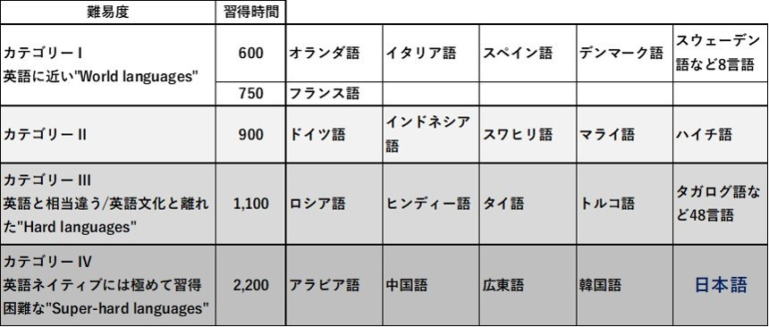
(FSIのデータをもとに著者が作成、難易度の " " 内はFSI原文のまま)
1日5時間 週25時間学習での計算ですが、アメリカでMBAを取った日本人の手記によく見られるように、アメリカの大学以上の学校では猛烈に自習します（しないと授業についていけない） スーパーハードは平日休日関係なく少なくとも毎日平均3時間は自習するので学習時間の実質は3,500時間を超えています。
横浜の山手にはアメリカ人外交官のための語学学校があります。
わたしは近くに住んでいるので、縁あって所長と日本着任直後の研修中外交官5人と半日ほど話す機会がありました。皆さん「日本語は飛びぬけて難しい」と話されていました。
アメリカ人は日本語がとても苦手です。
裏を返せば日本人も英語が苦手です。
私たちは中学、高校で6年英語を学んできました。
人によっては大学で2年あるいはそれ以上。
中高の授業は私の場合で恐縮ですが、週に数回の授業で総計1,155時間。 全然足りません。自習や塾、予備校での学習を含んでも圧倒的に英語に接する時間不足です。
さらにわたしの時代の英語授業は、Reading (英文解釈)
Grammar（文法）に偏っていました。発音とか英会話の集中授業なんてなかったです。
この学校英語の影響で、TOEIC800点超えても日本人は英語でコミュニケーションが取れない、というのが実情です。
そこでAI時代に即した、仕事で使える、必要十分な英語である グロービッシュ の出番です。
主役は4月に昇進して初めて部下を3人持つことになった高橋さん（通称タカ 33歳 人事部採用担当課長）。面倒見がいい人情家で社内の評判も上々。
話しの相手は著者（通称 Masa。 Jean-Paulはじめ友人はMasaと呼んでいます）
サラリーマン時代は会社3連続倒産事業撤退などで転職を余儀なくされながらPepsiCoやAppleで外国人上司・同僚にもまれながら仕事現場の英語を習得。
さらに企業基幹システム（ERP）のBaanではSE部隊を統括。初期のAIに触れる。
43の厄年に助かることがとても厳しい成人リンパ性白血病を発症。アメリカのドクターや専門機関にネット経由でアドバイスいただき、日本の主治医と医療チームの尽力で骨髄移植を受け最短の7カ月で無事退院。復帰した会社ではがん患者いじめにあうが、専門分野に加え英語ができる強みを生かして転職。
現在は日本グロービッシュ協会の代表理事。
Masaさんとタカさんは大学の少林寺拳法部の先輩後輩で、東京のOB会で知り合ってからLineで仕事のことなどをチャット相談しています。今日は久しぶりのオフライン（俗にいう飲み会）
話は危機的な人材不足で会社方針として海外から優秀な人財を採用することになったタカさんの悩みから、タカさんの人生を豊かにする「AI時代のグロービッシュ英語術」へと展開します。
＋＋＋＋＋＋＋＋＋＋
サラリーマンの聖地、テレビの取材でよく見かける新橋の日比谷口。
歩いて3分の居酒屋で乾杯のあと、高橋さんが勢いよくしゃべり始めました。
（高橋、以降タカ）
Masaさん、聞いてくださいよ。突然人事部長からフィリピンに行ってくれって先週言われたんですよ。
（長谷川、以降Masa）
よく聞く話だよ。
人手不足で採用に苦労してたんだよね？
フィリピンはドテルテ大統領になってから圧倒的に治安が良くなって、経済成長も軌道に乗ってきたし、タカの会社の製品もフィリピンに輸出してたっけ？
（タカ）
はい。
輸出どころか現地の代理店とJVで販社を作るって話があるんです。だから社長は社員の英語教育に舵を切って人事査定も作り直し。新人の採用条件にも英語を組み込んで人事採用担当の俺に社内英語化のプランを作れって・・・。でも英語教育なんて、そもそも英語が苦手で日本人相手の人事部に入った自分には、何をどうしたらいいのかさっぱりわからなくて。。。
いい方法を教えてください！ （両手を合わせて拝むポーズのタカ）
（Masa）
その前にやることがあるでしょ？
（タカ）
ウーン？？？
（Masa）
英語教育の前に工場の技術者と作業員にフィリピン人を確保するんでしょ。
採用担当はタカだよね。
真っ先に英語をなんとかしなきゃなんないのは誰よ！
わかっちゃいるけどやめられない♪ ってか？
（タカ）
・・・・・ （タカさん、無意識にコクコク。小刻みに頷いてますよ！）
いやいや、いやいや。
英語は苦手ス、勘弁してください。
（Masa）
だよね。
学校でやった英語は結局大学受験のためで、単語を丸暗記して和訳して英作。楽しくなかったよね。リスニングなんてサッパリ聞き取れないし、特に文法は嫌だったんじゃない？ でも学校英語は今の高1*から４技能といって従来の読む・書く・聞くに話すが加わってよりコミュニケーション志向が強くなってること知ってるでしょ。
*2018年時点での高1から新方式の入試になります
（タカ）
ああ、入試改革ですよね。
でも俺が大学出たのが１0年前で、会社の英語講座とか受けてみたけど続かなくて。それに周りの連中も全然英語できないからね。俺だけできるわけないっしょ。
（あらあら、タカさん酔いが回ってきて投げやり？）
（Masa）
じゃこの前渡した「世界のグロービッシュ 1500語で通じる驚異の英語術」って読んだ？ 2011年に発売されて大ヒット。ここにヒントがあると思うんだけど。
（タカ）
もちろん。
IBMのアメリカ本社で国際マーケティング担当の副社長だったフランス人のジャン-ポールが提唱した日本人みたいな非ネイティブ向けの国際英語ですよね。
たしか
・ 単語は1500語習得から始める
・ ストレートに言いたいことが伝わる能動態を基本にする
・ 簡潔に表現する。単語数にすると15以内
・ 発音も大事だけどアクセントを重視
・ 言葉に加えて表情、しぐさ、図表やサンプルを使用
逆に
・ 自国の文化習慣から発した表現、ジョークは使わない
（たとえば日本の場合 空気を読む これは英語文化にありません）
（Masa）
素晴らしい！
その通り。
これってグロービッシュ世界共通の基本理念。
本は英語も含めて8か国語に翻訳されて世界中で販売されているから。
この出版がきっかけでジャン-ポールとは友人になって、彼を顧問に迎えグロービッシュ協会を作ってはや7年。
日本では基本理念を守ったうえで、英語がもともと苦手な日本人の特性に合った付加価値（カスタマイズ）をつけた。それから英語学習にも使えるようになったAIなどの先端技術と記憶や聴覚などの脳科学の成果を利用するようにしてる。ただしネットツールは無料か格安であること。これが日本版グロービッシュの新原則。
Jean-Paulは常々 Enough is Enoughって言ってる。
これは「英語はコミュニケーションの道具であって目的じゃない。仕事や海外旅行など自分がやりたいことでつかえれば十分。 ネイティブレベルのペラペラを目指すととてもつらい。ネイティブと非ネイティブのコミュニケーションが成立する共通ルールがグロービッシュ」ってことだね。
図に書くとこんな感じ。
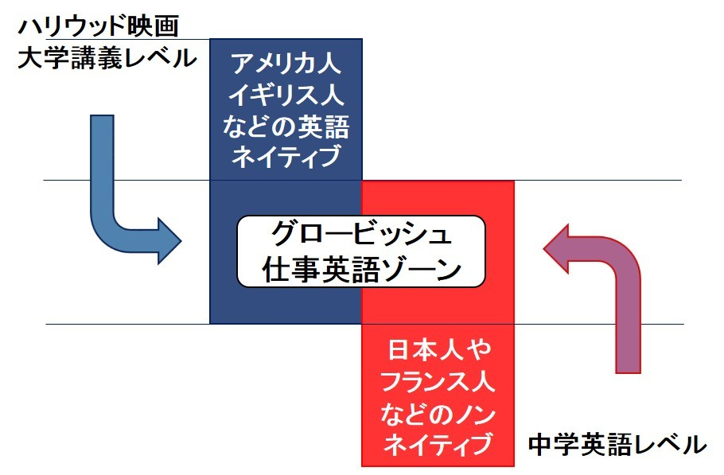
Jean-PaulはIBMアメリカ本社から日本に出張中にGLOBISHが閃いたんだって。
IBM箱崎本社（東京都中央区日本橋）の会議室のひとコマ。
Jean-Paulと日本人、韓国人が話していた時は和やかでわかりやすい会話、ところがそこにアメリカ人とイギリス人が入ってきてペラペラ始めた。
するとさっきまで話が弾んでいた日本人と韓国人はダンマリ。
俺もまったく同じ経験をPepsiCo Apple Baan などの外資系で働いていた時にたっぷり。だからJean-Paulの考え方に大賛成。
繰り返すけどこういうこと。
・ 単語は1500語習得から始める
・ ストレートに言いたいことが伝わる能動態を基本にする
・ 簡潔に表現する。単語数にすると15以内
・ 発音も大事だけどアクセントを重視
・ 言葉に加えて表情、しぐさ、図表やサンプルを使用
逆に
・ 自国の文化習慣から発した表現、ジョークは使わない
日本人とアジアや世界の非ネイティブと話すときはお互い外国語である英語でコミュニケーションをとるので自然とグロービッシュ方式になってたね。
ところが厄介なのはネイティブ。
国際経験の少ないネイティブほどペラペラとやってきて聞き取れない。
どうして？と聞いたことがあるんだけど " 子供に話すみたいにゆっくりやさしくだと失礼じゃないかと思った。 できないならできないと言ってくれればちゃんと対応した " だと！？ 空気読めないのよ。 逆に、PepsiCoの経験では、日本経験が長かったアメリカ人のボス（当時在日2年）、イギリス人の社長（2年）、アメリカ人の同僚（1年）は話すスピードを緩めて、わかりやすい表現だった。
（タカ）
忖度？
（Masa）
・・・・・
ソンタクしてもらわなくても、「仕事」 という目的であれば、ペラペラ相手のコミュニケーションはこうすると解決！
『相手がペラペラと聞き取れないスピードで言ってきたときに、2度でも3度でも聞き返すこと。さらにゆっくり明瞭に話してほしいと初対面なら勇気を出して依頼すること！』
考えてみればごく簡単で当たり前でしょ？
でも周りを見回して出来ている人がいるかどうか？？
これって文化的な違いがそうさせていて個人の問題とはちょっと違うのよ。
・ 英語でコミュニケーションをとるときは、その文化的背景を考慮して話すこと。
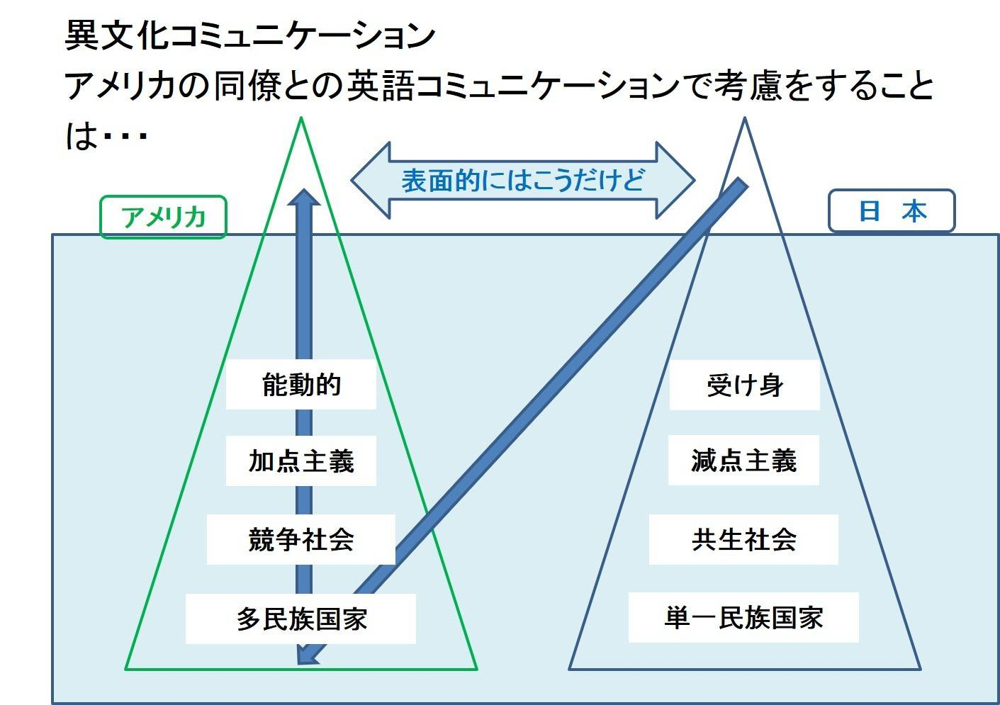
実際のコミュニケーションで言葉の部分は例えれば氷山の一角。
英語で話し合うときは英語文化が持つ背景に沿ったコミュニケーションが必要だね。図に書いたのはアメリカ文化。
英語全般に共通するけど、特にアメリカ英語では「話し手責任」が暗黙の了解のようだね。特にプレゼンとか会議では顕著。
つまり話し手が聞き手に自分の話の内容を理解してもらえるようにすること。受け手が理解できないのは話し手の責任とされる。
しかし受けては受け手で、わからないのであれば「わからない」と意思表示することが求められる。よく日本人はわかったふりをしてスルーするけど、これってトラブルの元。
分かったフリしているとどんどん話が進んでよけいに話についていけなくなる。後日こっそり 「あれってどういう意味でした？」 って質問したりすると不信感を持たれるよ。
『その場で解決』 が基本。
（タカ）
そんなことどうやったらできるの？
（Masa）
話の腰を折ってでも 「聞き取れない」 「もう一回説明して」 と意思表示するの。
日本人は文化的に 「人の話は最後まで聞く」 「空気を読め」 だけど、英語文化圏では真逆。
ただ日本人には 腰を折る には多少勇気が要る。
手を前に出して 「ストップ、ちょっと待って」 のサインを出せればオッケー。 慣れてくると相手が話の合間に「息継ぎ」をしたときにこちらが入り込むの。
日本でもテレビの討論番組では相手の話の腰を折って自己主張をしてるよね。ただ相手の息継ぎを無視してやたら声を大きく入り込むというか相手の話を邪魔するような腰の折り方はNGだよ。朝まで生テレビなんて腰の折り方を観察するにはいいんじゃない？（笑）
アジア人同士とかヨーロッパ、中東やアフリカであればそれぞれの型があるのでコミュニケーションに入る前に少し相手の国のビジネス習慣を調べておくと完璧。 要するにコミュニケーションの相手のことを知って、協業なり交渉なりをするといい。 ただし、共通言語はグロービッシュ型の英語が基本。
そもそも言語の構成にはそれぞれの民族の文化的習慣が反映されてると思う。 ひょっとしたら言語が文化形成そのものに影響を与えているかも。 たぶん相互作用で進化したんだよね。
例えば日本語の構成は「起承転結」、英語は最初に結輪あり。簡単な例は、
学校に行くだろう。 はカンタン英語では、
I will go to school.
言いたいことは同じだけど文章の作り方が違う。 具体的にどこが違うかな？
（タカ）
学校に ・・・ I will そうか！ 日本語は 誰が の I を言ってない。
（Masa）
正解！
日本語だと文脈（コンテクスト）から主語が I であることを聞き手が主語を補足することで話が通じるけど、英語では主語は必須。日本語は文化的共有性が高い（ハイコンテクスト）だけど英語は逆。いろんな民族が国内にいて文化的背景が違うので、英語を話すときは忖度しない、空気読まないが原則。もちろん抒情的な表現なんかは違うけど、いまは仕事上のコミュニケーションだから忖度しない！
図にするとこんな感じ。
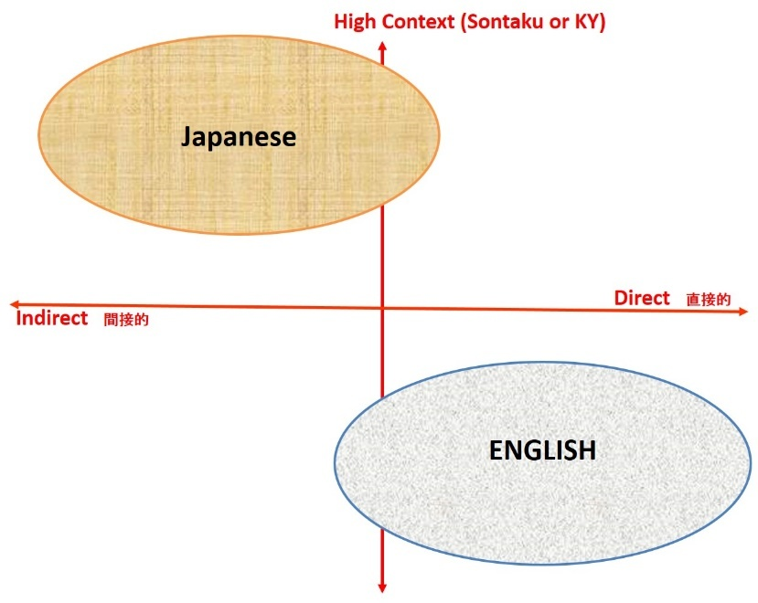
それから日本語では最後の " 行くだろう " まで聞かないと過去か未来か普段の習慣的なことを言っているのかわからないけど、英語は I will で未来であることが最初にわかる、結論先行型。
さらに文を次々に重ねて圧倒的なボリュームのコミュニケーションをおこなう会議でもプレゼンでもこの型。言語構造が文化に影響を与えたようにも思える。
欧米人は子供のころから学校やビジネスでこの結論ファーストのロジカルシンキング的ディベート術で鍛えられているから、そもそも日本で育った我々がネイティブ英語の土俵で戦っても完敗よ。
だからって、アメリカ文化がいいって話でないから誤解しないように。
相手のことを慮る（おもんばかる）奥の深い日本文化っていいと思うよ。
日本に生まれてよかったと思うだろ？
（タカ）
そりゃそうよ、英語話さなくて済むから。 （タカさん、ニヤニヤしない）
で、さっき言ってた 『相手がペラペラと聞き取れないスピードで言ってきたときに、2度でも3度でも聞き返すこと。さらにゆっくり明瞭に話してほしいと依頼すること！』 だけどどう言えばいいの？
（Masa）
親しい友人や気心知れた同僚に向けたカジュアルな表現からお客さんやボスに対する丁寧な表現までいろいろあるよ。
今日は仕事で使うための丁寧な表現を少し教えるね。
Could you say that again?
まだわからないのでもう一回聞くとき
Sorry, I still missed that.
2度聞き返せは話し手は「通じていない」「聞き取れていない」と感じて、簡単な表現に変えたり話すスピードを落として明瞭に話してくれるんだけど、中にはぺーらぺーらのままの場合もある。そんなときの特効薬。
Could you speak more slowly? とか Could you speak a little slowly?
ストレートに ゆっくり話して と居直るわけよ。
（タカ）
なるほど！
でも俺ってまだまだグロービッシュレベルじゃないんだよね。
（Masa）
じゃ、これから日本版グロービッシュの考え方を説明するね。
まず資料をどうぞ。
言語学では異なる言語の間にある違いを表現するのに「言語間距離」という用語を使います。
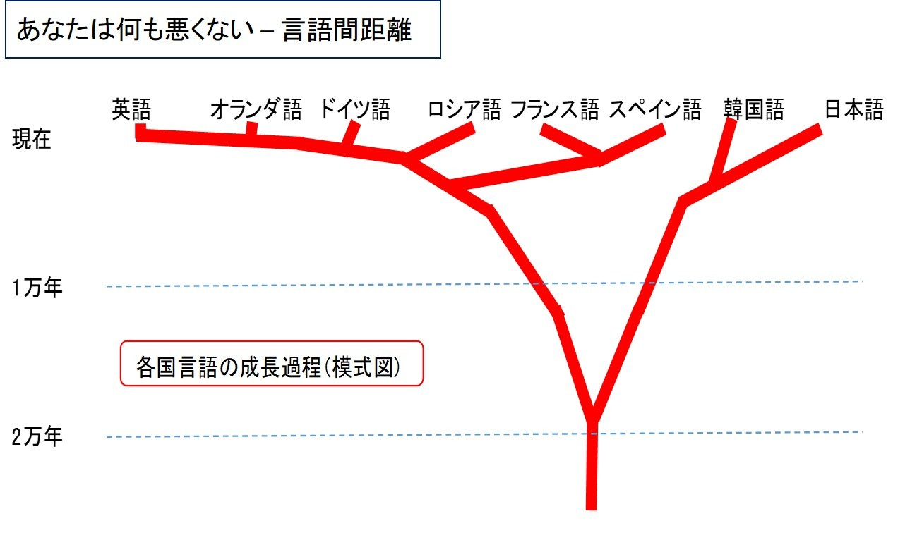
日本語はその形成時点から英語グループとは全く別の道で成長してきました。
だから日本人は英語の習得に苦労するのは自然なことです。
英語が苦手なのはあなたのせいではありません！
Globishが着目するのは母語（日本語）と英語の違い。
この違いを認識して、英語の特性に合わせた言語習得を行いましょう。
レッスンは英語式呼吸法から始まり、口の形と舌使いから音のつくり方（発音）に進みます。
次に言語の主要周波数から耳の使い方。あとは実践また実戦です。
日本語的感覚からすればまるでポップスのように抑揚（アクセントとイントネーション）がある英語のにぎやかさはまるで異質。日本語は静かに話し派手な抑揚をつけない言語です。
日本語は胸式呼吸で静かです。
ところが英語では客観的冷静であるはずのアナウンサーは文化的な違いもあって、勢いよく大量の息を使うためおなかに空気を貯め勢いよく話す腹式呼吸です。
文字では実感がわかないと思います。 ニュースを読む日米アナウンサーを動画で比較しましょう。
アメリカ人男性アナウンサーCNNのCarlさんは派手な口の動きでハッキリ発声してとても分かりやすい英語を話してくれます。Carlさんは明瞭に発音するため口と舌（口の形と舌の位置）を見事に使っています。舌の位置はCarlさんの動画を口になかに注目して見直すと、面白い発見があるかもしれませんよ！
ラジオを聴くときは周波数を合わせます。
普段は意識しないですが、私たちの耳（リスニング）や口（スピーキング）は生まれてから成長とともに、日本語の周波数帯域に合わせたチューニングがなされています。
英語のネイティブも同じ。
日本語に合った耳と口にチューニングしたままで英語を使おうとすると母語である日本語につられてしまい、聞けない＆ 話せない状態を生んでしまいます。
耳は実に高機能です。
例えばカクテルパーティ効果。
パーティ会場では様々な会話が飛び交っています。でもあなたに聞こえるのは話し相手の会話だけ。音量的には同じの隣のグループの会話は聞こえていません。物理法則ではあなたの耳には隣や周辺の音は公平に届いています。
しかし必要な音声しか聞こえないのは耳と脳の機能として不要な音（会話）はフィルターをかけるようにシャットアウトしているからです。
ところが、隣のグループからあなたの名前（高橋さーん）を呼ぶ声がしたら、あなたはざわざわした会場でもしっかり聞こえるでしょう！？
そもそも英語はあなたの耳には不要な音の集まりです。
必要な音とするには耳にその音（発音）が必要だよ、と教えてやらないと始まりません。日本語耳のままで英語を習得しようとするとツラい。
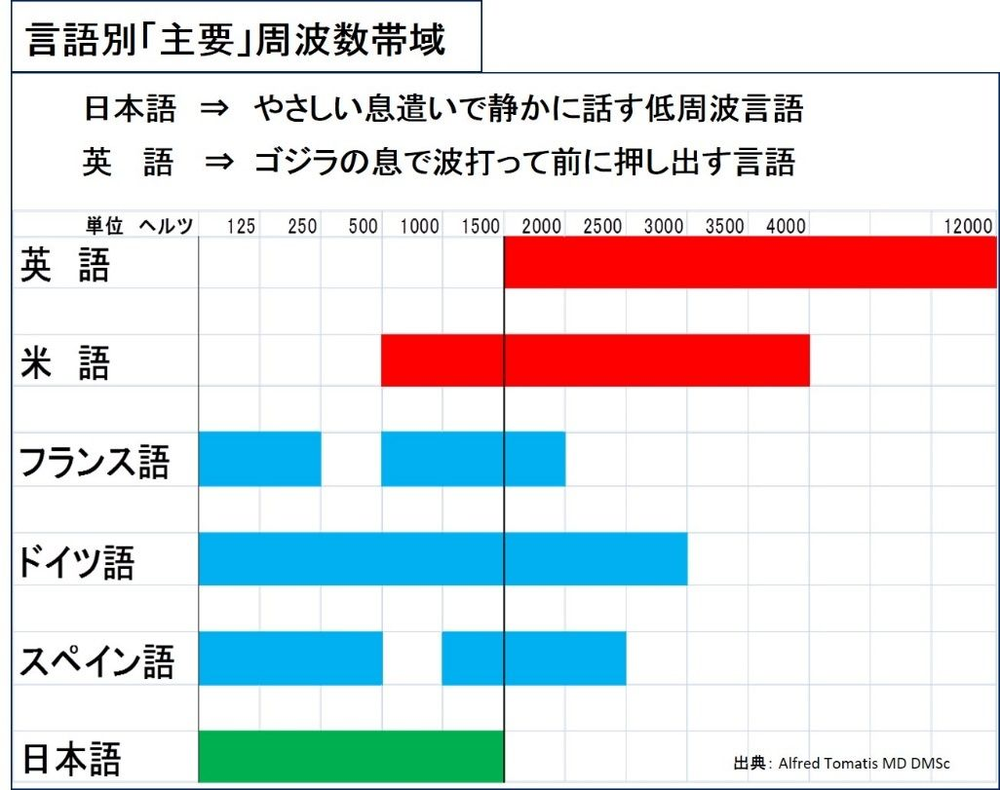
グロービッシュ英語術は英語の音としての特性に注目しています。
だからまず音（日本人にとって必要な最低限の発音）からスタートします。
EF Education Firstという世界最大級の英語教育機関が毎年世界各国の英語力ランキングを英語力試験EF Standard English Testをもとに発表しています。
2017年版は世界80カ国、100万人が受験しました。
日本は80カ国中何位だったと思いますか？
・
・
・
・
・
『37位』 中くらいでいいと思いますか？
順位は5ランキンググループにまとめられ、日本は下から2番目の「低い」グループ。1番の非常に高い、は1位から順に オランダ スウェーデン デンマーク ノルウェー シンガポール フィンランド ルクセンブルグ 南アフリカ
英語が公用語であるシンガポールと南アフリカを除いて、北ヨーロッパに集中しています。
2番目の高い、はドイツやオーストリアなどヨーロッパ諸国
3番目の標準的、にはフランス、イタリアなどに混じってアジアではベトナム、韓国、香港、インドがランクイン。英語国である香港やインドがここにランクされるのは少し不思議ですが、EF SET はリスニングとリーディングを計測する試験（無料）のため、会話力は強いが文法や文章読解力に難点がある香港とインドの姿が浮かび上がります。
日本で企業の人事評価で多用されているTOEIC（リスニング＆
リーディング）の弱点もここにヒントがあります。簡単に言うと、学校英語から受験まで勉強慣れしてTOEIC700点でも800点取っても仕事現場では（話せないから）使えない。TOEICでもこの点を克服するためにSpeaking & Writing テストを開発しましたが、2017年の L&R 受験者248.1万人 S&W 3.8万人 (IIBC発表)
だから「グロービッシュ基礎ビジネス英語」は発音から始めて会話力養成に力点を置き、日々進化するAIを採り入れています。
寄り道が長くなりました。
37位の日本が位置する4番目は36位から52位までで、悔しいかな36位は中国です。
詳細はこちら
https://www.efjapan.co.jp/epi/
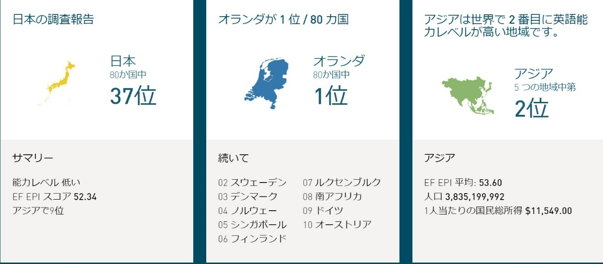
図表出所EF Education Firstのサイト
ところで、言語間の距離の図をもう一度
ほら、やっぱりあなたは悪くない。
オランダが1位なのは当たり前といえばあたりまえ。
中国語は日本語韓国語よりやや英語寄りです。
では、次は実践編です。
現在AIの得意分野は自然言語処理・音声認識・画像認識の３分野。
語学学習とは相性抜群です。
音声認識は「発音練習」に使えるし、将来的には画像認識で話し相手の表情やしぐさから感情を読み取った自動通訳が可能になるでしょう。
AI通訳（日本で開発されたNICTの無料アプリなど）AI翻訳（Google翻訳など）は多少の難点はあってもすでに実用レベル。
そこでわたしたちがやるべきことは、
1. 中高で学んだ英語を土台にAI時代に必要な要素を補強し
2. 日進月歩のAI英語ツールをフルに利用
そのうえで
3. ロボットにはできない 「対人英語スキル」 をつけることです。
仕事における対人英語スキルとは
文化的差異を乗り越えて仕事を成功させる「異文化間のコミュニケーション力」
「一を聞いて百を知る」 「和を以て貴しとなす」 奥の深い日本文化は世界に誇るべきものです。しかし、国境をまたぐビジネス英語の世界では逆の発想と対応が必要なことが数多くあります。
その前提となる本章では
中高で学んだ英語を土台にAI時代に必要な要素を補強するグロービッシュ基礎ビジネス英語術を紹介します。
すでに何度か説明していますが、それらを ひとこと でまとめると、
グロービッシュは世界のお 客様・取引先と仕事をするための実用的な『道具』です。
GLOBISHは1990年代初めにフランス人のビジネスマン、もと米国IBMの国際マーケティング担当副社長、Jean-Paul Nerrière（ジャン-ポール ネリエール）が友人のアメリカ人、David Honと共同で発案した、ビジネスに勝つために必要十分な英語です。
Jean-PaulやDavid のいう globish は英語をベースとした世界共通のコミュニケーション術です。過去には世界共通語として1887年にエスペラント語という新言語が作られました。しかし、今では耳にすることがほとんどなくなりました。ごく簡単に言うとアメリカ大陸を含め世界に植民地を拡大したイギリスが、世界No.1の座をアメリカに明け渡してから今日（こんにち）まで、世界のリーダー国が話す言語は英語であり、彼らにはわざわざエスペラント語を苦労して学ぶメリットがなかったから、ですね。
さて、
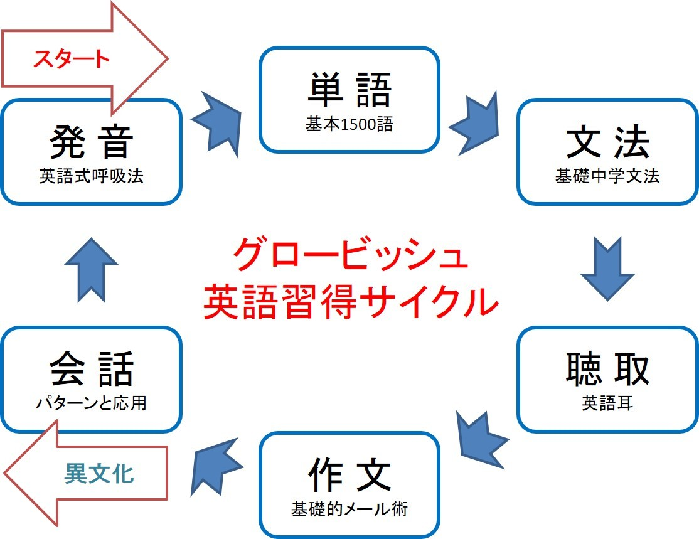
この図は標準的な学習手順です。
ワンサイクル終われば、実際の国際取引に役立つ英語文化圏及び取引相手国の ビジネススタイルを知る。そしてステップアップの2サイクル目に入ります。
しかしサラリーマンがまず必要とするのはリスニングとスピーキングです。
サラリーマン100人に英語で苦手なアンケートを取ったことがあります。
グロービッシュ基礎英語の6技能で苦手とする項目を3つまで。
するとダントツ1位と2位は？
そうです！
スピーキングが1位、僅差でリスニングは2位。
海外とのテレビ会議や外国人の同僚、来客が多い企業さんでのアンケートでしたが、コミュニケーションに苦労しておられました。
そこで日本のサラリーマン向け英語習得順は以下の通りです。
1. 発音・・・正確な英語の音を身につけます。発音できる音（日本語にはない英語特有の音）は聞き取れるようになるので、リスニングにダイレクトにつながります。 もちろんスピーキングの基礎でもあります。
発音練習には十分な時間をかけましょう。（そこそこきれいな発音ができれば、 自信になりますよね。上司や同僚にも胸が張れるし）
英語の発音時は、日本語の発音にない筋肉の使い方をして、強い息使い・縦横に素早く動く口・出したり丸まったりする発音のための舌を作ります。
2.
単語・・・そもそも単語を知らないと話にもならないですよね。グロービッシュが選択したビジネス向け1500語を習得。学習ツールには記憶定着の脳科学メカニズムを利用したフラッシュカード方式の無料アプリを使用します。フラッシュカードとは、子供にカードに書いた絵などをパッパッと次々見せて何かを答えさせるもの。例えばリンゴの絵を見せると子供は APPLE と声を出すような仕組みです。 受験の時にリングに綴じた短冊カードの表に英単語、裏に意味を書いて次々 めくって確認する単語カードもその類型ですね。
いまはこの短冊単語カードがアプリになって、音声で読み上げてくれ、単語を使っている現場がイメージできる例文がつけられます。こうして発音と実際の使用場面と単語を相互にリンクさせます。
3. リスニング・・・ペラペラの法則を身につけます。使用単語を絞った素材を使い、何度も 聞いて聞いて聞いて 耳を鍛えましょう。さらに音読で自分の声を聴きながら会話につながる英語回路を脳内に作ります。
4.
スピーキング・・・リスニングの次はアウトプットのスピーキングです！
スピーキングは発音で習得した、口・舌・息・胸郭と横隔膜（腹式呼吸）それぞれの筋肉をダイナミックに動かすことを意識します。ビジネス会話の基本はパターン化できます。例えば挨拶、自己紹介、説明、同意、反論、出張、お礼、などです。これら基本パターンをまず覚え込むことが今回のミッションです。
スピーキングのお相手は？
最新AIでいつでもどこでもコンビニ以上の手軽さで 24hours 7days です！
以上で発音からスピーキングの輪が出来上がりました。
本書が対象とするのはここまでです。
まず聞取りと会話力を養成、英語での会議や・打ち合わせに備えます。
ビジネスメールなどのライティングはセカンドサイクルでおこないます。
では、これから無料や格安のアプリ・サイトを紹介、効果的な学習法をお伝えし、 英語学習の伴走者のようにコーチングを提供します。
独学では厳しい英語学習を 『できるだけ軽く楽しく』 がモットーです。
では具体策に入りましょう。
毎日時間を決めて最低1時間英語を学習しましょう！という英語学習本を読んだり先生の言葉を聞いたことがあるでしょうか？
これはこれで正しいです。
なぜなら第一章の 日本人の英語学習時間は全然足りない？ で確認したように学生時代の英語学習時間は不足しています。
そしてサラリーマンになってからず〜っと、英語との接触は少なくなるか断絶状態。
この接触時間の圧倒的不足がいまのあなたの現状です。英語国で生まれ育った日本人夫婦の子供はネイティブ英語が話せます。わたしはサラリーマン時代にアメリカ（シアトル・ニューヨーク・ニューオーリンズ）とイギリス（ロンドン）に駐在して帰国した家族と親しくさせていただきました。帰国した当初の子供は米国英国滞在時の年齢と期間によりばらつきはありましたが、英語に関してはほぼアメリカ人かイギリス人。羨ましいですよね！？
だから日本生まれのサラリーマンに先生方は毎日最低1時間とおっしゃるのも無理からぬことです。しかし毎日毎日忙しいあなたには無理ですよね？
そこでグロービッシュ基礎ビジネス英語術からの提案は、
・ 仕事に役立つ要件に絞った英語術
ペラペラネイティブ英語は英語圏で長く生活をする場合以外 " 憧れ " にとどめておき必要事項を学習、目の前に迫った現実の英語会議、海外出張対策に集中
・ ネットに公開されている英語関連ツールをスマホで使い倒す
これらのツールは無料〜格安まで星の数ほど公開されています。気に入ったツールを自分で選択、毎日の10分15分のスキマ時間（朝夕の通勤、昼休み、早朝や就寝前など）で学習
・ 日本人サラリーマンが最も苦手とする " スピーキング " を克服
グロービッシュ基礎英語術は従来の英語学習法に加え、毎日のように進化しているAI英語ツールも貪欲に採用して効率的な英語習得を目指します。
ところでグロービッシュ英語習得サイクルの図をご覧になって何か変だとは思わなかったですか・・・？ 気づいた方には何か差し上げたいところですがここはご勘弁を。正解は「読解」がない、ということです。高校の授業でReadingってなかったですか？英文解釈とか読解とか？日本人の読解力の基礎は中高6年と受験勉強でそこそこ出来上がっているので、効率重視のグロービッシュではスキップしています。法務部で国際法務や特許を担当していたり、経理財務部で海外向けアニュアルレポート作成に関与しておられる場合は別ですが・・・。
発音とは？
肺から声帯に息を送って発声という声の素（もと）を作り、のどから舌や口などの調音器官で音声を作ることです。肺からの呼吸で発音しているのですね。
そもそも英語と日本語では発音の時の呼吸から違っています。
・ 日本語は胸式呼吸で静かに発音する言語
・ 英語は腹式呼吸でたっぷりの息を使う、まるでゴジラがガーと光線を吐くように発音する、勢いがないと正確に発音できない言語
では動画をご覧ください。
アメリカの中高生向け10分番組、CNN Student News の メインキャスター、Carl Azuz さんの口の動きに注目！
https://aieigo.jimdofree.com/carl/
Carlさんのようなネイティブは腹式呼吸で勢いある発声（発音）をおこないます。
腹式呼吸はよく「おなかに息をためる」と言われますが、実際は息を吸うときに横隔膜を引き下げて胸（胸腔）を拡げる呼吸法です。
声量（＝息の量）が必要なプロ歌手の練習の第一歩は、この腹式呼吸です。
（あなたもカラオケで思いっきり腹式呼吸してるかもしれないですね？）
もし今一つ ピン とこない場合は、YouTubeで「腹式呼吸」を覗いてみてください。わかりやすい動画がいっぱいです。
この英語式発音・発声だとどうなるか？
こうなります！
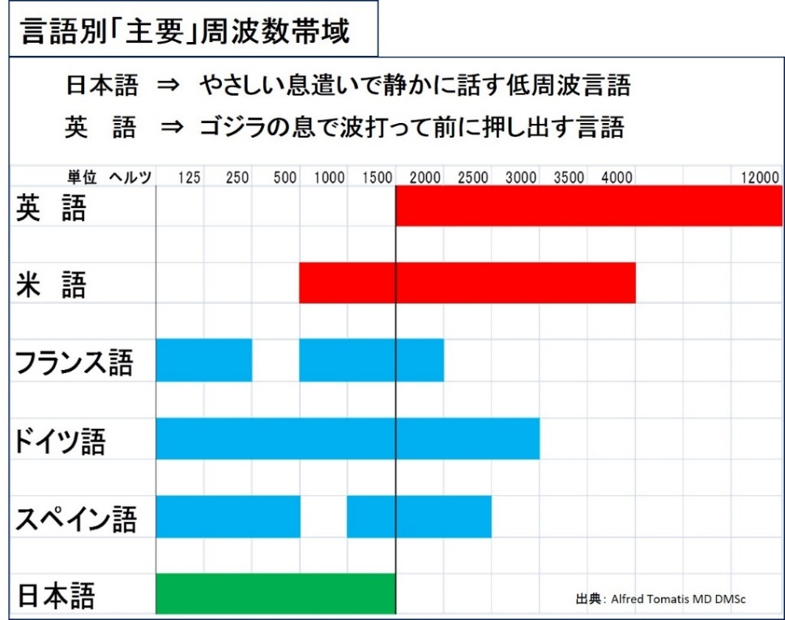
英語の発音学習は、この高周波を作り出すような息の使い方＋発音時の高周波を作り出す口の形と舌の位置の覚え込み、と言い換えられますね！
では、英語にはどんな発音があるか？ 母音と子音の数を数えてみてください。
諸説ありますが、英語にはざっくり * 母音が２０子音が２４あります。
日本語もざっくり母音が５子音が１６です。
どいうことは・・・英語には日本語にない発音がいっぱい・・・
そうです。
逆に同じ発音はほぼない、と考えて取り組んだほうがスッキリするでしょう。
英語２０/２４ 日本語５/１６は慶応大学文学部 堀田隆一教授のブログを参考にさせていただきました。ところが東京大学教養学部英語部会では英語の母音は１５子音２４と解説されています。
学問レベルでもかような揺れが見られるのに、我々のように仕事レベルで十分な場合１．リスニングのためにはできるだけ正確に発音を認識できる耳が必要ですが、
２．話すときの発音に神経質になる必要はありません。
３．日本人全般が苦手ゆえ外国人が聞き取りにくい発音に集中するといいと思います。
ただし、ネイティブレベルを目指す方、アメリカやイギリスに留学、駐在、移住して現地のコミュニティに溶け込む必要のある方などはグロービッシュ英語を越え良い先生に教わりながら精進をお願いします。
さて、日本語は「あいうえお」を除いて、基本的に子音＋母音で構成されます。
ところが英語には子音が連続する単語が多くあります。
英語の発音に日本語式を持ち込んでしまうと、途端に相手に話が通じにくくなります。
例えば STRONG の名詞 STRENGTH
日本語式にはストレングス（sutorengusu）で母音が5つ挟まります。
そして、ス・ト・レ・ン・グ・スと一語一語くっきりと話します。
ところが、英語はSTRENGTH (発音記号 stréŋ(k)θ ) で母音はただひとつ。
全体を一語として一息で一気に話します。
仕事現場ではカタカナになっている英語由来の日本語が曲者です。
ハウス、ビル、セキュリティ、などなど例をあげればキリがありません。
想像してみてください ・・・ 日本語であるカタカナにつられて日本語式発音になると話す方も聞く方もお互いツラいでしょう。
そこでグロービッシュ式発音術。
1． まずひと通り発音を練習
1． 練習用サイト紹介
2． ひとこと： 発音を目で見て音で確認できます。
2010年に最終更新されてからいつの時もそこにある、って感じです。
とても分かりやすく、最初に見ておくサイトとしておススメです。
少なくとも3サイクル、母音子音発音のお手本の真似をしてください。
母音子音の発音のほかにも情報が掲載されていますが、現段階では母音子音の発音に集中してください。
3． さらにお役立ち情報： 中学で習った発音記号を覚えていますか？ 発音記号とその音の出し方（発音）がわかると、初めてみる単語でも発音記号さえわかれば正確な音を出すことが可能です。一度身につくと一生もの。単語を覚えるときは発音記号を意識すると音に意識が向かい耳が日本語の影響から離れます。これがよく言われる 英語耳 の第一歩です。
4． 発音単独ではなく、単語の一部として発音を練習
5． 単語には強勢（ストレス アクセントとも言いますね）があり、ストレスのある箇所は強く発音します。
6． ひとこと： ひと通り発音と発音を文字で表現する発音記号を学んだら、すぐに単語学習に移ってください。グロービッシュ式単語学習法はお手本の読み上げと発音記号、アクセント記号が付属するので、ひとつの単語を覚えたら１
回の発音復習になります。
発音を今とは180度、くるりと変革するといいことがいっぱい。
・ 自分でストレスを含めて正しく発音できると、日本語の特性に耳が引っ張られなくなり、英語が英語として聞こえ、リスニングパワーが強化されます。
よく英語耳と言われますよね。
・ 通じるスピーキングにつながります。
・ 何より、英語に自信がつきます。いままでは外国人となると、会議では下を向いて英語台風が過ぎるのをじっと我慢、もしもあなたが発言することになったら緊張のあまり声が震えて背中は汗でびっしょり（実はわたしがそうでした）。そんなあなたが変身！するかも知れないですよ（いえ、変身しますよ）
ここでも「仕事のための英単語」という前フリがつきます。仕事といっても海外出張を含みますので、一般的な海外旅行にも十分対応可能です。
グロービッシュは本の副題「1500語で通じる驚異の英語術」とあるように、ビジネス向けの1500語を選択しています。
日本では、グロービッシュ1500語に後述するVOA Learning Englishの基本使用単語約1500語を掛け合わせ、共通する1,243語を重要単語としています。VOAはVoice of America でアメリカ政府が運営しています。その中にLearning Englishというアメリカ英語学習者のためのパートがあります。アナウンサーは通常の3分の2程度のスピードで明瞭に話してくれるので単語とリスニングの基礎を固めるには非常に向いています。
グロービッシュ重要1,243語のリストはこちらから無料でダウンロードいただけます。
https://aieigo.jimdofree.com/1243words/
リストはEXCELのシートになっています。
シートの最初に「使い方」を説明しています。ぜひ自分単語帳を作成して1,243語を仕事現場で使えるようにしてください。
さぁ、単語の学習はできるだけサッと終えてしまいましょう。
そして日々英語に触れている中で単語数（語彙）を増やしていけばオッケーです。
しかし人の脳は「一時的に覚えても忘れる」という重要な機能を持っています。特に現代のように情報洪水といわれる環境では脳は繰り返し出てくる単語、何か重大な場面で使った単語以外は忘れる機能を持っています。そりゃ全部覚えていたら頭はパンクしますよね。例えば、一夜漬けの勉強で試験が終わったとたんに覚えたことを忘れた、「丸暗記・丸忘れ」という経験はあなたにもあるはずです。
そこで記憶のメカニズムを応用し、新しい・忘れた単語は何度でも身につくまで復習できるフラッシュカードという機能を持つフリーソフトがおススメ。
図にするとこんなイメージです。
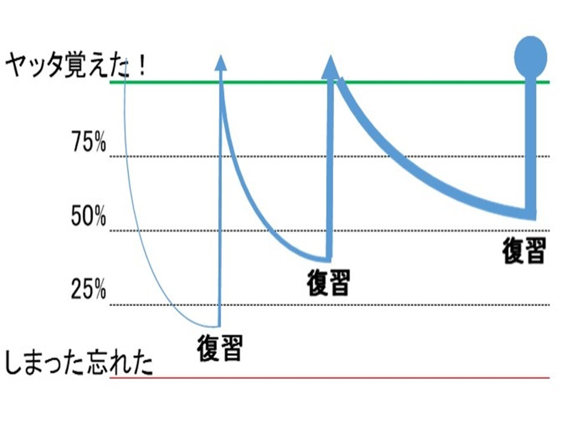
ANKI で自分単語帳が作成できます。特徴は単語に音声、発音記号、例文をつけられること。1243語は最初に知っている・身についている単語を除外してから覚え始めるので、その数は100語〜800語、経験的には500語程度の方が最も多かったです。
自分の手を動かして作った単語帳は記憶に残りやすい、学習が進めば必要に応じて新語を追加しながらずっと使い続けられる、というメリットがあります。デメリットは最初に手間がかかること。
ANKIのサイトはこちらです。
https://apps.ankiweb.net/
（英文）
ANKIで検索すると日本語の解説（使い方）が出てくるので参考にしてください。
ANKIは一度使い方を覚えると、いろんな 「覚えなければならない場面」 たとえば、資格試験、検定試験の専門用語理解や過去問対策にも使えます。
ただ残念なのは、ANKIはAnkiWebというPC (Win/Mac/Linux) 向けのソフトで、iPhone/iPad向けはAnkiMobile という3000円のアプリになっています。
Android向けにはAnkiDroid という無料アプリが提供されています。
しかも、AnkiDroidにはPC (AnkiWeb) で作った自分単語帳と 「同期」 できる機能までついています。なんと素晴らしい・・・！
AnkiMobileにも同期機能がついているのですが、アプリ自体が3000円なので、無料〜格安を標榜するGLOBISHとしては腰が引けています。AnkiMobileを検定試験対策などの複数の用途でお使いの場合はおススメしたいと思います。
ハリウッド映画を試しに字幕なしで見て凹んでいるあなた！
海外との電話会議、テレビ会議で全然聴き取れなくて、相手の言っていることをスルーしてしまい困っているあなた！！
もし相手の言うことがペラペラと聞こえるなら、そして特に相手がアメリカ人なら「原因と対策」があります。
学校で教科書を音読するときはどう読み上げていました？
先生のお手本も一語一語丁寧に読んでくれていませんでしたか？？
するとあなたの脳内には一語一語ハッキリ聞き取るように英語回路が作られています。ところが実際に映画や仕事現場で相手が話す英語はペラペラ。知っている単語でもまるで違う！
聞き取れない原因は、あなたが知っている発音、文の読み上げと違う方式でネイティブは話すから。例えば日本野球でストレートの打ち方をしっかり学んでいても、相手のアメリカ投手がカーブやツーシーム、スプリットしか投げてこなければ空振り三振になってしまうようなものです。イギリス系英語は少し程度は緩やかですが、やはりペラペラしています。
英語にはペラペラの法則があります。これがカーブやツーシーム、スプリット。
法則１．つながる音
法則２．消える音
法則３．変わる音
まず自分で読み上げてみてください。
take out
knock off
right after
cut in
press on
guess what
going out
sending out
send it
made it
tons of
call in
cure of
time out
turn off
send it out
in an hour
first train
get to
keep pushing
cheap pencil
good deal
send diamond
get done
meet Dave
big cat
pink gate
gate pin
big brother
young mother
need to
night
stop
wrong
let you
could you
can you
have you
thank you
miss you
want to
wanna
have to
hafta
going to
gonna
got to
gotta
では著者のサイトにアメリカ英語とイギリス英語で読み上げた音声を置くので聞いてみてください。余談ですが読み上げはネット上の自動読み上げツールで作りました。AIの導入でとても滑らかになっています。古いシステムを知っている私としては感動モノです・・・こんなところにもAIが！やっぱり仕事英語であれば使えるAIはできる限り活用して省力化、本業に集中したいですよね。
え、なぜ音がつながるのか、消えるのか、変わるのか解説がない？
サイトには読み上げ音声と解説をアップしました！
https://aieigo.jimdofree.com/yomiage
さあ！法則がわかれば後は実践。
VOA Learning English を使いましょう。
VOAはVoice of America （アメリカの声）で、米国務省が海外向けに無償放送しているニュースです。Leaning English はその中のメニューのひとつで、アメリカ英語を学ぶ外国人のための学習サイトです。基本的に英文に音声が付属しており、読み上げスピードはアナウンサー標準の3分の2が目安になっており、さらに明瞭な発音で使用単語も人名地名商品名などの固有名詞以外は、できるだけ約1500程度に絞られているので非常に取り組みやすい作りになっています。
サイトはこちら。
まず全体をご覧ください。
https://learningenglish.voanews.com/
GLOBISHは日本で生まれ育った純国産日本人にとって異国異文化の言語である「英語」が話せるようになるためには、まず英語に口を慣らすことが先決と考えます。
そこで重視したいのが 『音読』
そのための無料素材でおススメしたいのは、またまたVOA Learning Englishです。
・ VOA LEで使われる基礎単語は身につけた
・ 基礎発音も身につけた、
するとあとは実践です！
VOA LEの記事サンプルです。
U.S. lawmakers have demanded that Facebook take more steps to protect the privacy of its users. Some even raised the possibility of regulating social media networks.
The demands came during two days of testimony on Capitol Hill by Facebook founder and CEO Mark Zuckerberg. He appeared before Senate and House committees on Tuesday and Wednesday.
The 33-year-old founder of the social media service showed up wearing a dark suit and tie, instead of his usual T-shirt. He faced questions mostly about the company' s privacy policies.
Bryan Lynn wrote this story for VOA Learning English, based on reports from the Associated Press, Reuters and VOA News. Hai Do was the editor.
We want to hear from you. Write to us in the Comments section, and visit our Facebook page.
（中略）
Bryan Lynn wrote this story for VOA Learning English, based on reports from the Associated Press, Reuters and VOA News. Hai Do was the editor.
We want to hear from you. Write to us in the Comments section, and visit our Facebook page.
______________________________________________________________
Quiz
Words in This Story
regulate -- v. to make rules or laws that control something
app -- n. computer program that performs a special function
breach -- n. an action that breaks a law, rule or agreement
consumer -- n. person who buys goods and services
source -- n. where something comes from
inevitable -- adj. something that cannot be prevented
Your opinion
いやいやなんとも至れり尽くせり。
A) 人名などの固有名詞以外は基本単語（中には例外も・・・笑って許して下さい）
B) 読み上げ機能付き（標準スピードの２/３でリスニングにも使える）
C) 基本単語にない新単語は解説
D) 内容の理解を助けるクイズ
E) ライティング練習を兼ねた書込み
以上5大特典付き！
どうですか？
話題が次々と変わると同時に、アメリカ英語学習用のページまで充実。
高品質無料の極致ですよね！
ご参考： 巻末の付録２に概要説明をあげておきます。
読み上げはその場で聞けると同時にmp3音源としてダウンロードできます。
これらを使い倒しましょう。
VOA LE を使った標準的な英語口作り。
１． まず英文を見て内容を把握する。これで固有名詞や単語で迷うことを予防します。
２． 読み上げ機能で聞く。しっかりと音を聞き取ります。
３． 読み上げにあわせて自分でも声を出して真似します。アナウンサーの言うとおりに、またCarlさんのように口を大きく開けたり横に開いたりしながら真似してください。
最初のうちは２．や ３．のときに英文を見ながら聞いて口を開くのもいいでしょう。
そして最低3回繰り返したら、英文を見ないで聞いてからアナウンサーのすぐ後ろについて発声してください。
ここでのポイントは使い慣れた同じ素材で何度も繰り返す、ということです。
英文を見ながらの練習はPC/タブレット/ちょっと画面が小さいですがスマホ。
そのあとmp3音源をスマホに入れて空いた時間にリスニング。そのあと英文を見ないで読み上げです。
このように、初級の間は「ひとつの素材を使い倒す」というのが上達のコツです！
このアナウンサーのあとについて真似しながら読み上げるのは、シャドーイングといって英語口作りにとても有効です。シャドーイングは結構緊張します。VOA LE くらいの分量で口を慣らしていくのが、英語初級ではつま先だって実力の半歩先行くちょっとだけの厳しさが実感できていいと思います。3か月もすれば 『おっ！！！』 と感動する進歩が実感できる可能性もまんざらではないですよ。
ポイント：
同じ素材を何度も使って慣れが出てきたら、アナウンサーのしゃべり方に注目
・ 音の連結や消滅に意識を向けてください （VOA LE は外国人英語学習者向けなので、あまり音の変化がキツくないように配慮してくれています。しかしそこはアメリカ英語、注意を向けると音の変化に気付きます）
・ さらに抑揚のない日本語と比較すると上手なアナウンサーの音声はまるで音楽を聞いているようです。この抑揚をリズムとかイントネーションといいます。この抑揚も真似るようにしてみてください。きっと周りの同僚友人が驚きますよ。
口慣らしが出来たら実践。
スマホには会話のパターンを練習するアプリがいっぱい。
気に入ったビジネス会話アプリを使ってあなたの会話パターンを増やしてください。
これで初級は卒業です。
晴れてご卒業 、おめでとうございます。
文法・・・あの無味乾燥な文法用語。
しかしビジネスとなると文章の構成がしっかりした文作りが必要。
GLOBISH基礎ビジネス英語はリスニングやスピーキングレッスンの中に文法要素を組み込みます。
ここで思い出してください。
中高6年英語を勉強したあなたには十分な下地があります！
だから本屋さんに行くと「中学英語で〇〇」とか「中学英語の復習」といったような書籍が棚に並んでいます。
文法は「中学英語で〇〇」を本屋さんや図書館、Kindleで探して1冊をしっかりと読み込んでください。ビジネスレベルではこれで十分です。
ここでは中学文法には出てこない重要な英語の法則をお伝えします。
それは英語の組み立て方、五文型です。入試に出ないので私たちの時代は先生によって教えたり教えなかったりと思います。私の場合は中学の先生が授業で使っていました。おかげで2016〜2017の英語書籍のベストセラー「会話もメールも 英語は3語で伝わります」で強調していたSVOは「そうそう！」って感じで受け止めました。
五文型を一言で表すと、英語の文は五文型のうちの「ひとつ」に分類される。
さらにグロービッシュが付け加えるのは英語の文はどんなに長くても言いたいことはひとつだけに絞られる。
例えば、CNNの文章
Zuckerberg repeated an apology offered in the previous hearing that Facebook made a "big mistake" by not taking "a broad enough view" of its responsibility.
FacebookのCEOで億を超えて兆万長者のマーク・ザッカーバーグが8,700万人もの個人情報を不用意に流出させアメリカ議会で2度目の証言のあとの4月11日の速報です。apology 謝罪 previous hearing 前回の公聴会
ここで言いたいことはひとつ！
何でしょう？
Zuckerberg repeated an apology. です。
五文型は主語をS (Subject) 動詞を V (Verb) 、次に動詞の対象で動詞がすることってなに？誰に？をあらわす 目的語 O (Object) 主語や目的語っていったいどういうもの？を補い説明する 補語 C (Complement) の S V O C で表します。
そうするとSVOが主流だな・・・ってなんとなく感じますよね？
もう一度全文を見てみましょう。
Zuckerberg repeated an apology offered in the previous hearing that Facebook made a "big mistake" by not taking "a broad enough view" of its responsibility.
Zuckerberg repeated an apology
は例のSVO.
この文以外はこの主題となっているSVOの説明（付属品です）
仮に翻訳すると
ザッカーバーグは繰り返した、謝罪を。
（どんな謝罪かというと）前回の公聴会で述べた謝罪。
（その謝罪の内容をかいつまむと）Facebookは "大きな間違いをした"
（どんな間違いかというと）・・・・
このように長い文でも言いたいことはひとつ！あとは言いたいことの説明です。
この言いたいことを常に意識しておくと、リスニングに役立ち、わかりやすいスピーキングにつながります。
五文型の基礎的な情報はネット検索で多数見つかります。
よさそうな情報を二つ三つ探して イメージを 膨らませて身につけてみてくださいね。
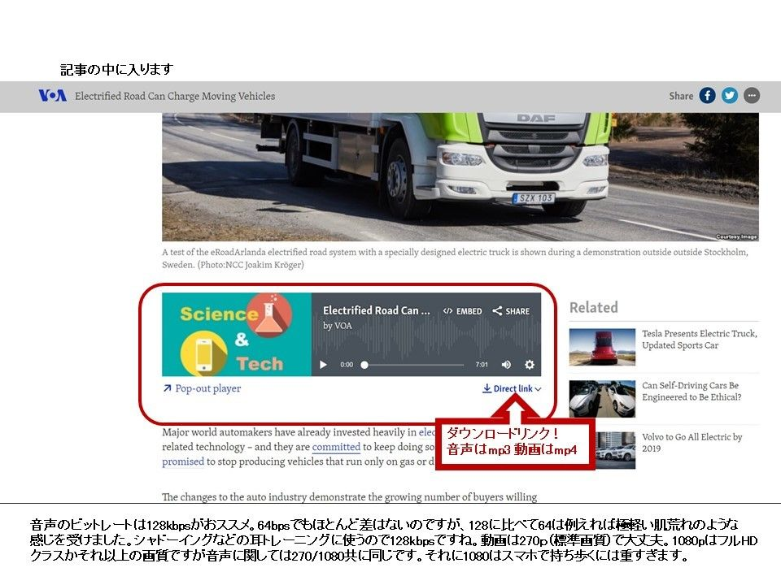
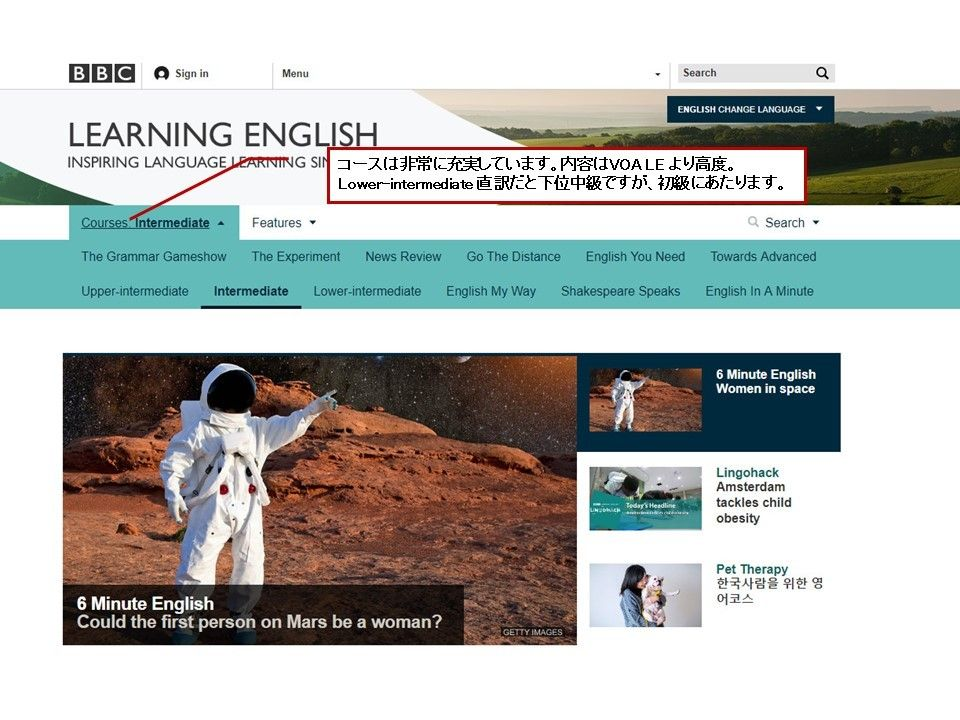
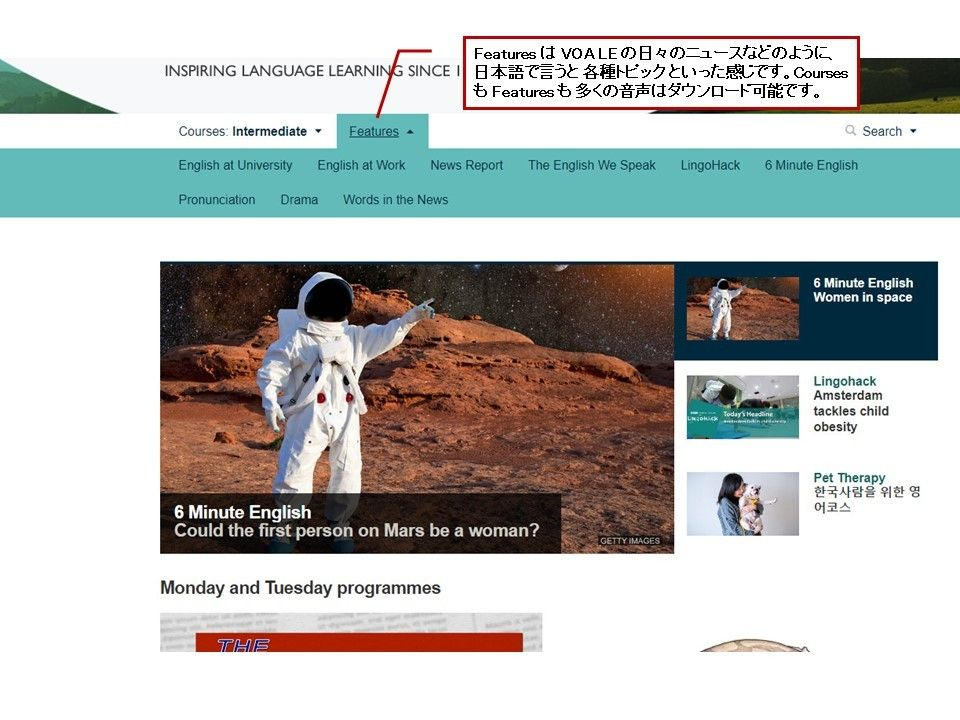
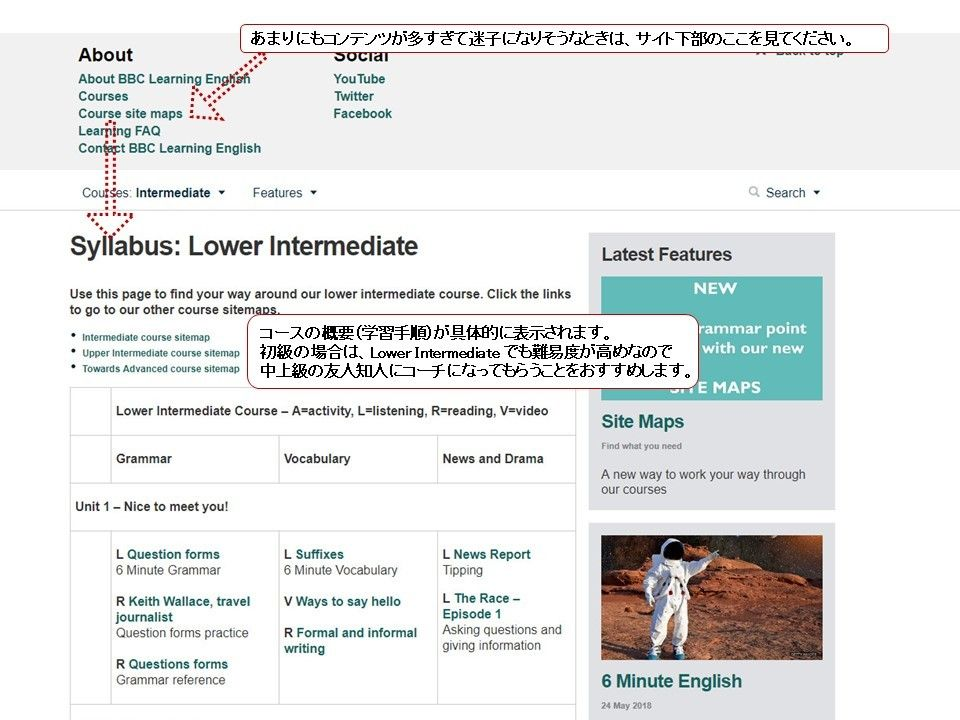
このe-bookには3000名のビジネスパーソンに受講いただいた発音・単語・リスニング・スピーキング術のエッセンスを盛り込みました。
従来型の紙の書籍出版も勧められましたが電子書籍にこだわりました。
なぜなら、
・ 電子書籍にすれば無料にできる
・ 出版後にメール、Facebook、YouTubeなどで読者さんとつながることができる
・ つながった読者さんとは英語力アップのコミュニケーションを継続できる
・ 毎日新しくなるAI・ICT 技術情報が共有できる
そうです！この本は始まりなんです。
目指す方向は 少なくとも仕事レベルの英語力をつけること。
そして次には競争の激しい1億２千７００万人の日本市場を飛び出て世界２１億人の英語話者市場で活躍すること。
そんなあなたにはGLOBISHメンバーサービスをご紹介します。
会費は無料です。
サービスの内容（例）は
・ 最新ネット素材とアプリの効果的な使い方、発音〜会話まで
・ 最新AIツールの使いこなし方、特に発音と英会話
・ 異文化コミュニケーション術
配信は
・ 週1回のスマホに宛てたメール （不定期の特集配信も）
・ メールと連動した専用サイト（動画や音声を掲載）
さらに、GLOBISHメンバーに応募いただいた方には、メンバー限定３大特典として
１．本書で書きれなかった英語力増強のヒミツ１２話をメール配信（週２回ペース）
２．動画で覚える基本動詞２２基本前置詞２８（合計時間約130分）をプレゼント
３．VOA Learning Englishを編集した 「英語口作り音読素材」 ３本もプレゼント
１２話のメール配信はメンバーサービスメールと並行して行います。
応募フォーム：
https://aieigo.jimdofree.com/applyglobishmember/
しっかりトレーニングを積んで 「英語コミュニケーションはもうこれで大丈夫！」 となったときには簡単に登録を解除できるので、どうぞ安心してご応募ください。
また、本書の内容やGLOBISHメンバーサービスに対するお問い合わせはこちらからお願いします。 海外出張などのやむを得ない状況以外は通常48時間以内に返信を差し上げるよう心がけております。（土日祝日、クリスマスから年末年始は除きます。）
お問い合わせ：
https://aieigo.jimdofree.com/question/
GLOBISH AI時代の英語術 【徹底基礎編】 をお読みいただきありがとうございます。
あなたが英語力をつけて、世界２１億人のマーケットでご活躍されることを、心よりお祈りしながら、ここで一旦中締めとさせていただきます。
白血病で天国に行きかけた時もずっと支えてくれたカミさんと子供たちに感謝つつ・・・
一般社団法人日本グロービッシュ協会
代表理事 長谷川 正和
（Masaと呼んでください）